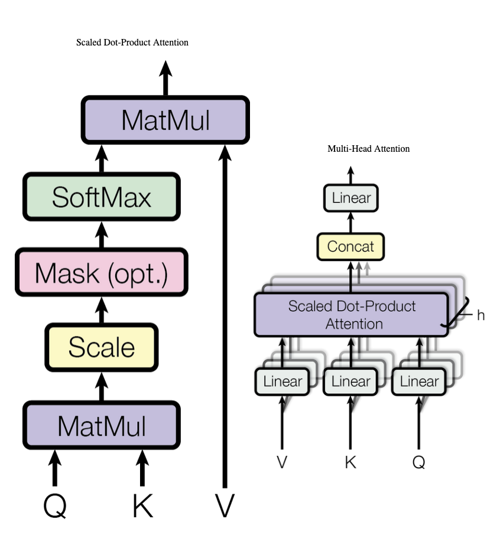
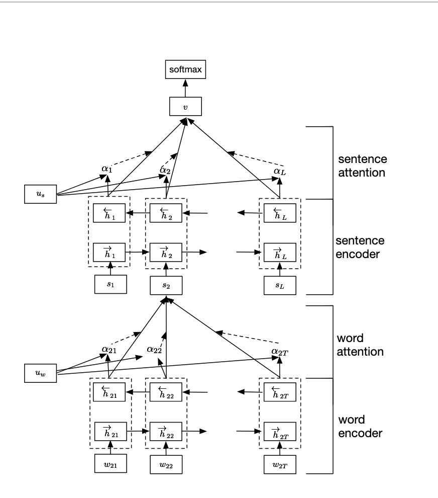

This section presents the end-to-end pipeline and training details.


Technical aspects of preparing text samples for model training.
Dataset and Dataloader
class BertDocDataset(Dataset):
"""
Pre-tokenizes full document WITHOUT special tokens (no CLS/SEP),
then _encode_chunks slices raw tokens and adds CLS/SEP per chunk.
This ensures each chunk gets a clean [CLS]...[SEP] structure,
not corrupted by double special tokens from slicing a pre-tokenized doc.
Caching: pre-tokenized tensors are saved to disk (pickle) and loaded
on subsequent runs to skip the slow pre-tokenization step.
"""
_cache_dir = '/teamspace/studios/this_studio/.bert_cache/'
_cache_file = None # class-level, set per split
def __init__(self, texts, labels, tokenizer, max_chunks=14,
chunk_size=384, chunk_stride=384, split='train'):
self.max_chunks = max_chunks
self.chunk_size = chunk_size
self.chunk_stride = chunk_stride
self.labels = [torch.tensor(l, dtype=torch.long) for l in labels]
self._tokenizer_name = tokenizer.__class__.__name__
# Use a stable cache key so we only recompute when params change
total_len = max_chunks * chunk_stride + (chunk_size - chunk_stride)
cache_key = f'{split}_{len(texts)}_{max_chunks}_{chunk_size}_{chunk_stride}_{total_len}'
os.makedirs(self._cache_dir, exist_ok=True)
self._cache_path = os.path.join(self._cache_dir, f'{cache_key}.pt')
if os.path.exists(self._cache_path):
print(f" Loading cached pre-tokenization from {self._cache_path}...")
cached = torch.load(self._cache_path, map_location='cpu', weights_only=True)
self.input_ids = cached['input_ids'] # (N, total_len)
self.attention_mask = cached['attention_mask'] # (N, total_len)
print(f" Loaded {self.input_ids.shape[0]:,} cached samples.")
else:
N = len(texts)
print(f" Pre-tokenizing {N:,} samples (no special tokens)...")
# Pre-allocate: avoids list + torch.cat doubling peak RAM
self.input_ids = torch.zeros(N, total_len, dtype=torch.long)
self.attention_mask = torch.zeros(N, total_len, dtype=torch.long)
ptr = 0
batch_texts = []
for i, text in enumerate(texts):
batch_texts.append(str(text))
if len(batch_texts) >= 256 or i == len(texts) - 1:
encoded = tokenizer(
batch_texts,
max_length=total_len,
padding='max_length',
truncation=True,
return_tensors='pt',
return_token_type_ids=False,
add_special_tokens=False,
)
bs = encoded['input_ids'].shape[0]
self.input_ids[ptr:ptr + bs] = encoded['input_ids']
self.attention_mask[ptr:ptr + bs] = encoded['attention_mask']
ptr += bs
batch_texts = []
print(f" Done pre-tokenizing {ptr:,} samples — saving cache...")
torch.save({
'input_ids': self.input_ids,
'attention_mask': self.attention_mask,
}, self._cache_path)
def __len__(self):
return len(self.input_ids)
def __getitem__(self, idx):
return self.input_ids[idx], self.attention_mask[idx], self.labels[idx]
Dataset class and dataloader setup for text classification.
Tokenization, normalization rules, truncation, and padding strategy.
Tokenizer Pipeline
class ChunkAttentionMHA(nn.Module):
"""
Multi-Head Self-Attention to aggregate chunk CLS embeddings into document embedding.
Architecture:
chunk_cls_embeddings (B, num_chunks, H)
→ + chunk sinusoidal positional embedding
→ Multi-Head Self-Attention (2 separate LayerNorm: pre-attention + pre-FFN)
→ [CLS_first; masked_mean_pool] weighted combination
→ document embedding (B, H)
"""
def __init__(self, hidden_dim, num_heads=8, dropout=0.1):
super().__init__()
self.hidden_dim = hidden_dim
self.num_heads = num_heads
assert hidden_dim % num_heads == 0
# MHA processes (batch, seq, embed) when batch_first=True
self.mha = nn.MultiheadAttention(
embed_dim=hidden_dim,
num_heads=num_heads,
dropout=dropout,
batch_first=True,
)
# Standard transformer block: 2 separate LayerNorms
self.norm_attn = nn.LayerNorm(hidden_dim) # Pre-attention norm
self.ffn = nn.Sequential(
nn.Linear(hidden_dim, hidden_dim * 4),
nn.GELU(),
nn.Dropout(dropout),
nn.Linear(hidden_dim * 4, hidden_dim),
nn.Dropout(dropout),
)
self.norm_ffn = nn.LayerNorm(hidden_dim) # Pre-FFN norm
# Learned weight for combining [CLS-first] with mean-pool
self.cls_weight = nn.Parameter(torch.tensor(0.5))
def _get_pos_emb(self, num_chunks, device):
"""Sinusoidal positional encoding — no learned parameters."""
positions = torch.arange(num_chunks, device=device)
dim_t = torch.arange(0, self.hidden_dim, 2, device=device).float()
angles = positions.unsqueeze(1) / (10000 ** (dim_t / self.hidden_dim))
pe = torch.zeros(num_chunks, self.hidden_dim, device=device)
pe[:, 0::2] = torch.sin(angles)
pe[:, 1::2] = torch.cos(angles)
return pe
def forward(self, chunk_embs, chunk_mask=None):
"""
Args:
chunk_embs: (B, num_chunks, hidden_dim) — CLS embedding per chunk
chunk_mask: (B, num_chunks) — 1 for valid chunk, 0 for padding
Returns:
(B, hidden_dim) — document embedding
"""
B, N, H = chunk_embs.shape
# Add sinusoidal positional encoding
pos_emb = self._get_pos_emb(N, chunk_embs.device)
x = chunk_embs + pos_emb.unsqueeze(0)
# Padding mask for MHA: True = masked (ignore)
key_padding_mask = None
if chunk_mask is not None:
key_padding_mask = (chunk_mask == 0) # True = masked
# Pre-LN self-attention with residual
x_normed = self.norm_attn(x)
attn_out, _ = self.mha(x_normed, x_normed, x_normed,
key_padding_mask=key_padding_mask)
x = x + attn_out
# Pre-LN FFN with residual
x = x + self.ffn(self.norm_ffn(x))
# Combine: w * [CLS-first chunk] + (1-w) * masked_mean_pool
cls_emb = x[:, 0] # (B, H) — first (beginning of document)
if chunk_mask is not None:
# Masked mean: sum / count (ignores padding chunks)
mask_expanded = chunk_mask.unsqueeze(-1).float() # (B, N, 1)
mean_emb = (x * mask_expanded).sum(dim=1) / (mask_expanded.sum(dim=1) + 1e-9)
else:
mean_emb = x.mean(dim=1)
w = torch.sigmoid(self.cls_weight)
doc_emb = w * cls_emb + (1 - w) * mean_emb
return doc_emb
Tokenizer setup with truncation and padding policy.
Unified architecture flow covering encoder setup, head adaptation, and output stage.
Encoder + Classifier Head
class FullModel(nn.Module):
"""
BERT (last N layers trainable) + CLS extraction + Multi-Head Attention + MLP.
Processing pipeline:
text → tokenize → BERT encode all chunks IN PARALLEL (batched)
→ Re-tokenize each chunk with [CLS]...[SEP] to get true CLS embeddings
→ ChunkAttentionMHA: sinusoidal pos + MHA + [CLS*w + masked_mean*(1-w)]
→ MLP: LayerNorm → Linear(768→256) → GELU → Dropout → Linear(256→7)
"""
def __init__(self, bert_model, tokenizer, hidden_dim=768, num_classes=7, dropout=0.3,
max_chunks=None, chunk_size=384, chunk_stride=384,
bert_ft_layers=4, num_heads=8):
super().__init__()
self.bert_model = bert_model
self.tokenizer = tokenizer
self.max_chunks = max_chunks if max_chunks is not None else Config.MAX_CHUNKS
self.chunk_size = chunk_size
self.chunk_stride = chunk_stride
self.hidden_dim = hidden_dim
self.bert_ft_layers = bert_ft_layers
self.device = next(bert_model.parameters()).device
# Pre-compute special token IDs
self.cls_token_id = tokenizer.cls_token_id
self.sep_token_id = tokenizer.sep_token_id
self.pad_token_id = tokenizer.pad_token_id
if self.pad_token_id is None:
self.pad_token_id = 0
# Multi-Head Self-Attention over CLS embeddings of all chunks
self.chunk_mha = ChunkAttentionMHA(hidden_dim, num_heads=num_heads, dropout=dropout)
# MLP: Pre-LN classifier
self.norm = nn.LayerNorm(hidden_dim)
self.dropout = nn.Dropout(dropout)
self.fc1 = nn.Linear(hidden_dim, 256)
self.act = nn.GELU()
self.fc2 = nn.Linear(256, num_classes)
def _encode_chunks(self, input_ids, attention_mask):
"""
Encode chunks with proper BERT [CLS]...[SEP] structure.
Each chunk is re-tokenized as a standalone BERT input:
[CLS] + chunk_content[:chunk_size-2] + [SEP]
PARALLEL: all chunks processed in ONE BERT forward pass via batch flattening.
"""
B = input_ids.size(0)
num_chunks = self.max_chunks
content_size = self.chunk_size - 2 # room for CLS and SEP
# Slice all chunks: (B, num_chunks, content_size)
all_ids = torch.stack([
input_ids[:, start:start + content_size]
for start in range(0, num_chunks * self.chunk_stride, self.chunk_stride)
], dim=1)
all_am = torch.stack([
attention_mask[:, start:start + content_size]
for start in range(0, num_chunks * self.chunk_stride, self.chunk_stride)
], dim=1)
# Mark valid chunks (have at least one real token): (B, num_chunks)
chunk_valid = all_am.any(dim=2).float() # (B, num_chunks) — 1.0 if chunk has real tokens
# Build standalone BERT inputs: [CLS] + content + [SEP]
# Shape: (B, num_chunks, chunk_size)
standalone_ids = torch.full((B, num_chunks, self.chunk_size), self.pad_token_id,
dtype=torch.long, device=self.device)
standalone_am = torch.zeros(B, num_chunks, self.chunk_size, dtype=torch.long, device=self.device)
standalone_ids[:, :, 0] = self.cls_token_id
standalone_ids[:, :, 1:1 + content_size] = all_ids
standalone_am[:, :, 0] = 1
standalone_am[:, :, 1:1 + content_size] = all_am
# Place SEP right after the last real token in each chunk, not at a fixed position.
# Layout: [CLS at 0] + content[1..k] + [SEP at k+1] + PAD[k+2..]
# For a chunk with 50 real tokens: SEP at pos 51 (after token-50, before 331 PADs).
# For a full chunk (382 tokens): SEP at pos 383 → clamped to 382.
# For an all-pad chunk (0 real tokens): SEP at pos 1 (right after CLS).
content_lens = all_am.sum(dim=2) # (B, num_chunks) — real token count per chunk
sep_pos_0idx = (content_lens + 1).long().clamp(min=1, max=self.chunk_size - 1)
# scatter_ requires index shape == self shape; expand index to (B, num_chunks, chunk_size)
idx_expanded = sep_pos_0idx.unsqueeze(2).expand(B, num_chunks, self.chunk_size)
sep_mask = torch.zeros(B, num_chunks, self.chunk_size, dtype=torch.long, device=self.device)
sep_mask.scatter_(dim=2, index=idx_expanded, src=torch.ones_like(sep_pos_0idx).unsqueeze(2).expand_as(sep_mask))
standalone_ids = standalone_ids.masked_fill(sep_mask.bool(), self.sep_token_id)
standalone_am = (standalone_am.float() + sep_mask.float()).clamp(0, 1).long()
# Flatten to (B*num_chunks, chunk_size) — ONE BERT call
flat_ids = standalone_ids.reshape(B * num_chunks, self.chunk_size)
flat_am = standalone_am.reshape(B * num_chunks, self.chunk_size)
outputs = self.bert_model(input_ids=flat_ids, attention_mask=flat_am)
last_hidden = outputs.last_hidden_state # (B*num_chunks, chunk_size, H)
# Reshape and extract CLS: (B, num_chunks, chunk_size, H) → (B, num_chunks, H)
last_hidden = last_hidden.reshape(B, num_chunks, self.chunk_size, self.hidden_dim)
cls_embs = last_hidden[:, :, 0, :] # CLS token of each chunk
return cls_embs, chunk_valid
def forward(self, input_ids, attention_mask):
cls_embs, chunk_valid = self._encode_chunks(input_ids, attention_mask)
doc_emb = self.chunk_mha(cls_embs, chunk_valid)
# MLP: Pre-LN — one dropout only (before final projection)
doc_emb = self.norm(doc_emb)
doc_emb = self.fc1(doc_emb)
doc_emb = self.act(doc_emb)
doc_emb = self.dropout(doc_emb)
logits = self.fc2(doc_emb)
return logits
Model architecture and forward pipeline for text task.